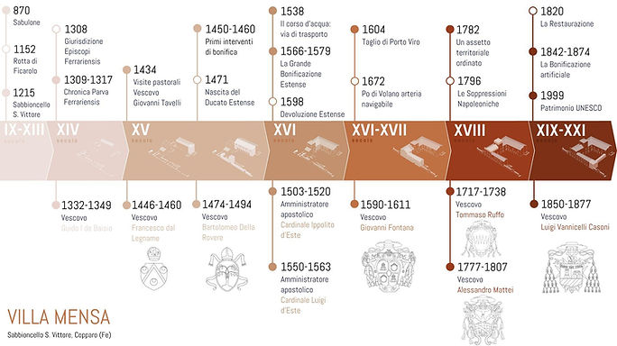
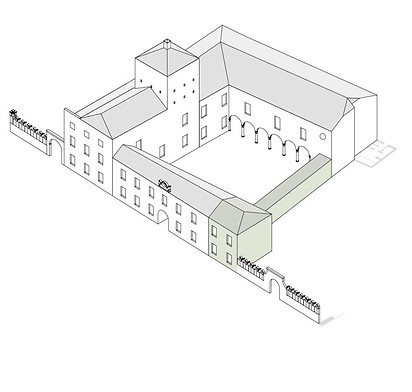
Villa Mensa, located in Copparo near Ferrara, Italy, is a historic site with roots in the 16th century. It was built by Cardinal Ippolito d'Este, who served as the Bishop of Ferrara. The villa functioned as a rural residence and an agricultural hub for managing estates in the surrounding area.
Characterized by its Renaissance architecture, Villa Mensa features symmetrical design and once boasted impressive gardens. Over the years, the structure has undergone renovations while maintaining its historical essence. Today, Villa Mensa is not a major tourist destination but occasionally hosts local events and attracts interest from history and architecture enthusiasts.
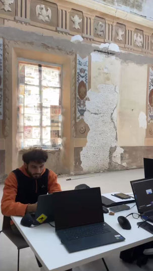
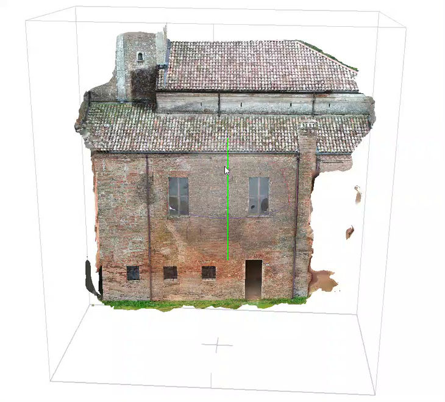
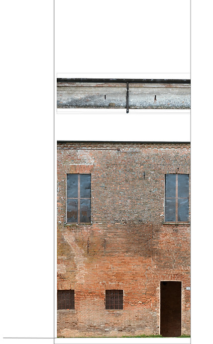
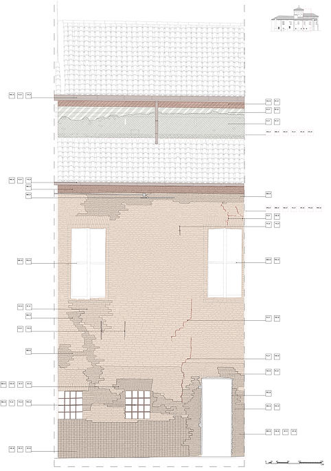
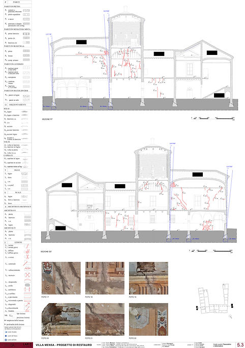
In this Conservation Studio, the team was entrusted with a portion of the villa's façade and several interior rooms. Their task was to conduct high-resolution scans of these areas to thoroughly analyze the damages, cracks, and deterioration that have developed over time.
This detailed investigation aims to provide a comprehensive understanding of the villa's current condition, enabling the team to propose effective restoration strategies. The ultimate goal is to rehabilitate the villa and adapt it to accommodate new programs while preserving its historical and architectural integrity.
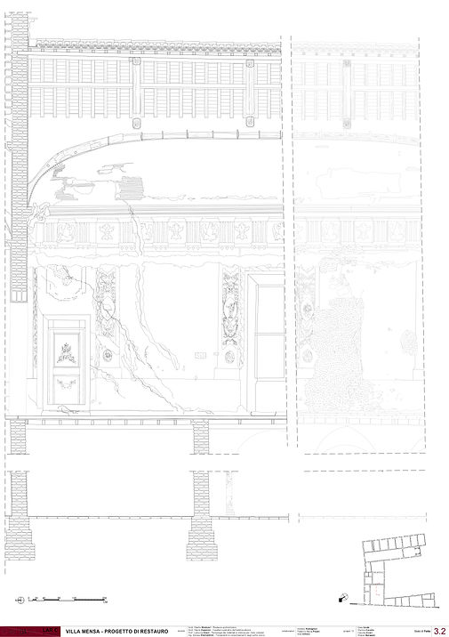
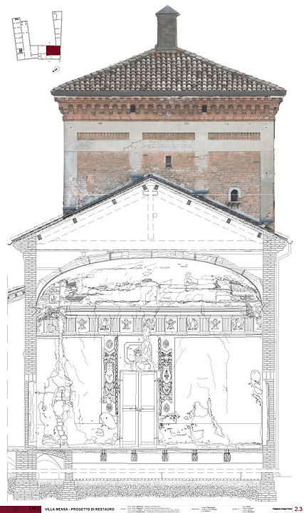
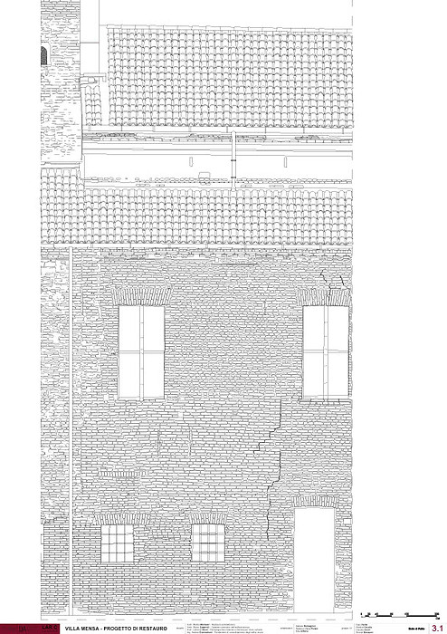
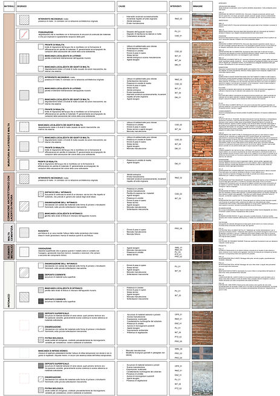
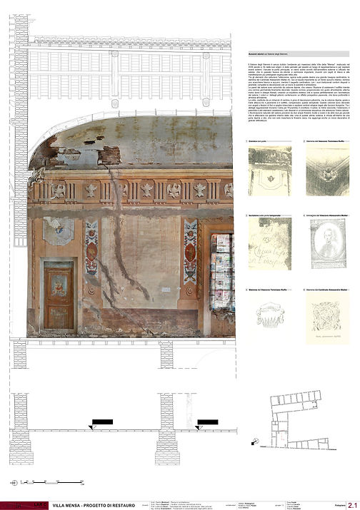
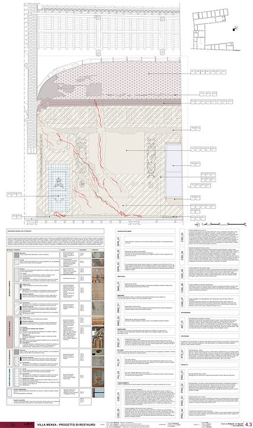
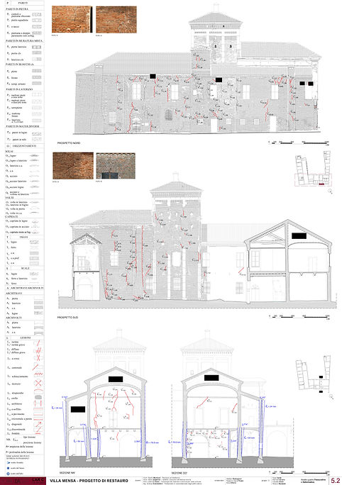
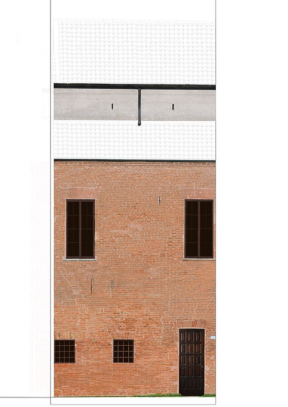
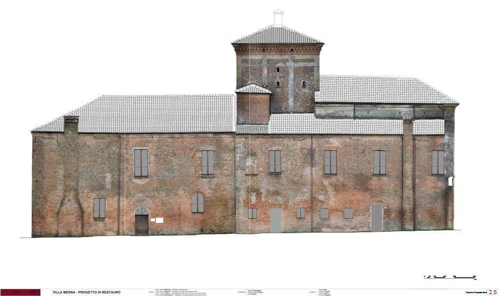
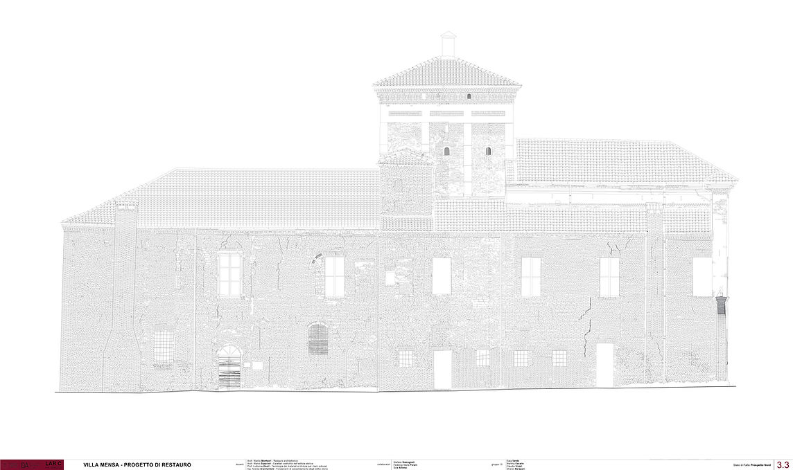
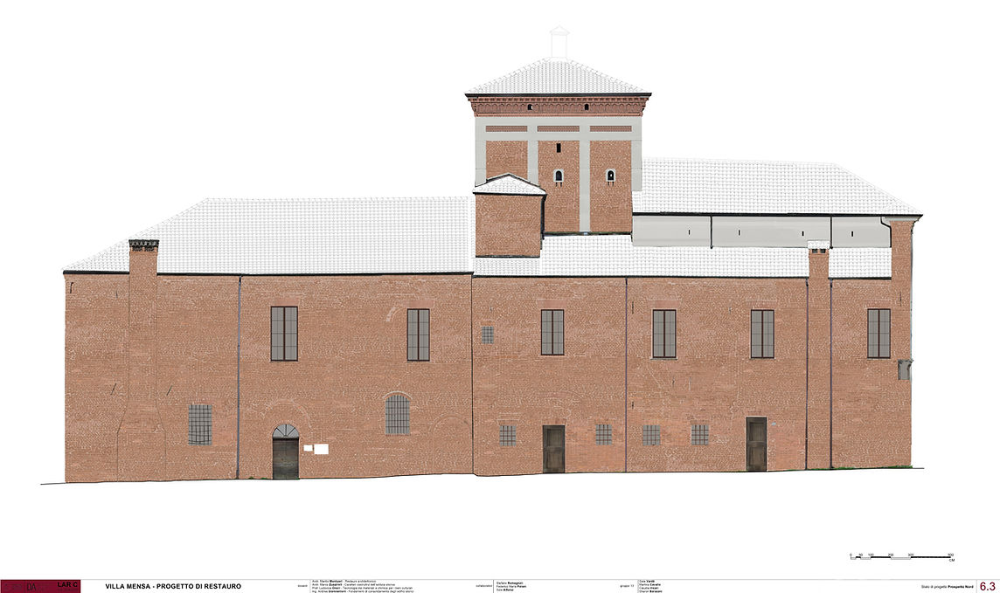
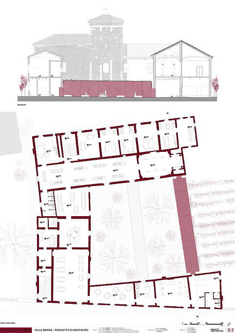
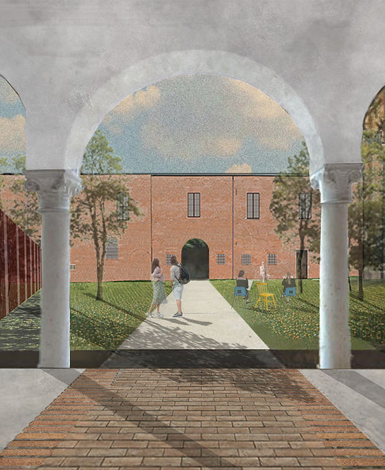
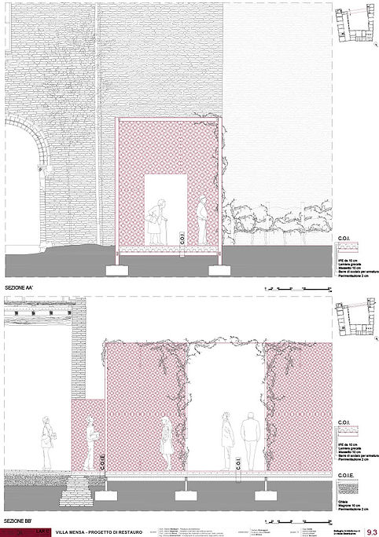
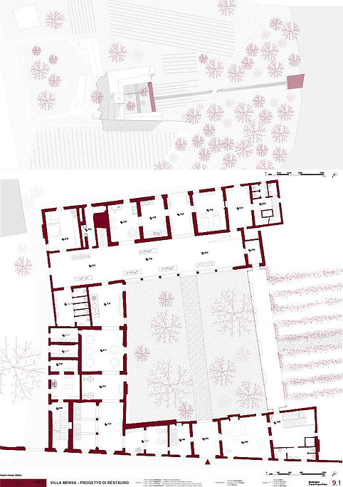
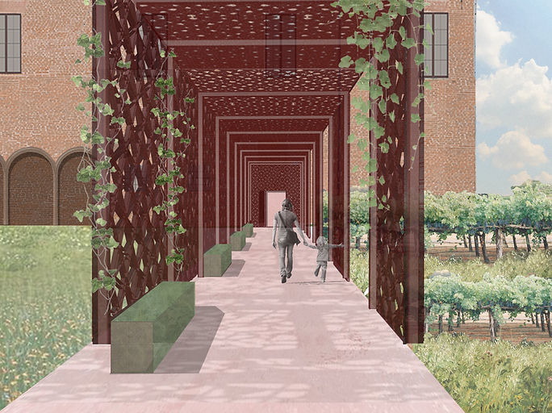
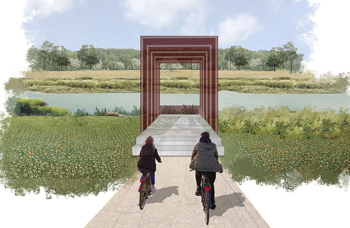